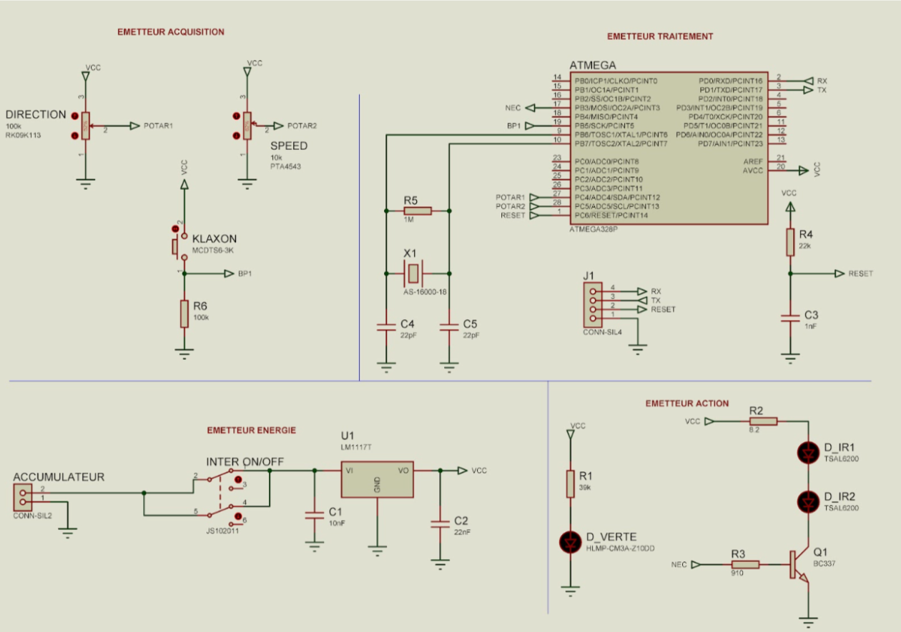
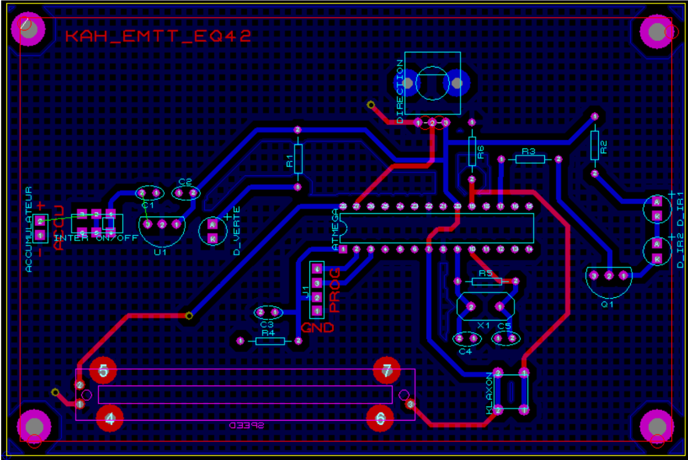
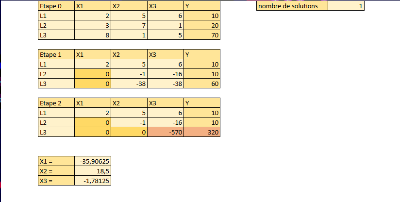
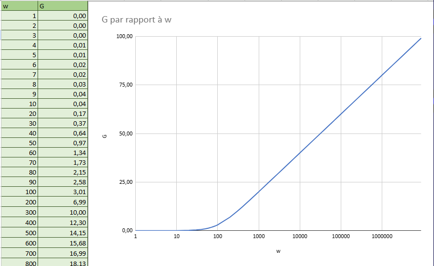
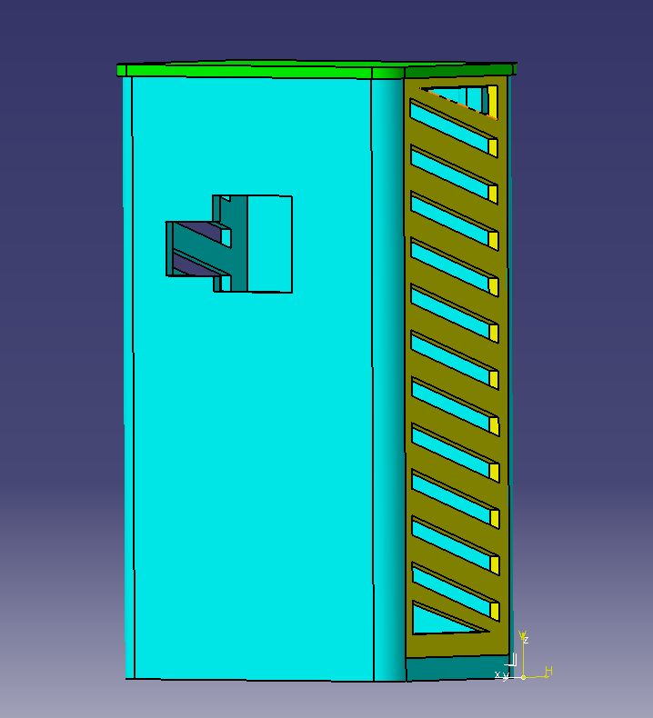
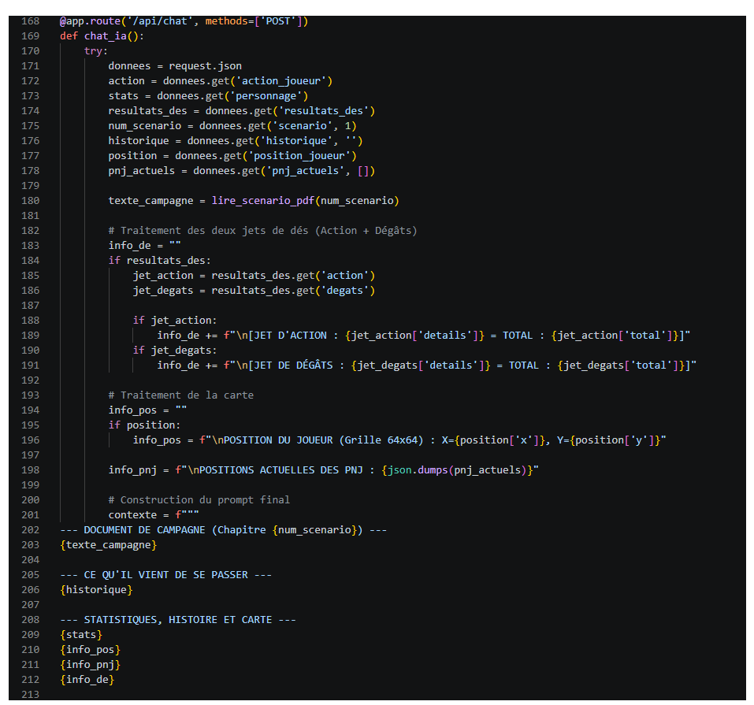
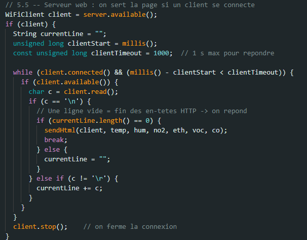
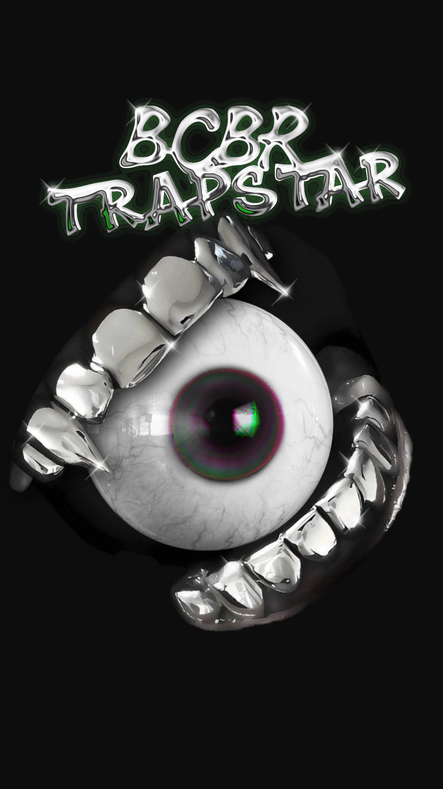

Voici l'entièreté des logiciels que je maîtrise ou que je suis en train d'apprendre.
J'utilise la suite Proteus pour la conception de schémas électroniques (ISIS) et le routage de circuits imprimés (ARES). Cet outil m'a notamment permis de réaliser le PCB complexe de la carte emetteur du Kart à hélice avec des contraintes d'espace très strictes.


J'utilise excel principalement pour faire des représentations graphiques ou exprimer des statistiques en temps réel.


J'ai découvert le logiciel CATIA grâce au DU TSS (technologie au service de la santé) car j'ai dû designer un boitier pour contenir des capteurs.

Grâce aux nombreux dossier ou compte-rendus rédigés tout au long de mon parcours scolaire j'ai dévellopé des très bonnes base sur les logiciels de traitement de texte.
Maîtrise de Python pour le développement d'outils backend et de scripts d'automatisation. J'utilise couramment des librairies comme moviepy pour le traitement de médias, et PyInstaller pour compiler mes scripts en exécutables autonomes. Je suis également à l'aise avec la création de serveurs locaux via Flask pour gérer des API.

Programmation bas niveau et haut niveau sur diverses architectures (ATmega328P, cartes Arduino MKR). Excellente compréhension de la communication I2C, SPI et UART, notamment pour l'intégration de capteurs environnementaux complexes (CO, CO2, NO2, VOC).

Utilisation du moteur Unity pour des projets ludiques et expérimentaux. Je m'en sers notamment pour développer le front-end de jeux intégrant des systèmes externes complexes, comme la communication avec un serveur Flask hébergeant une API d'IA dynamique (Game Master).
Autonomie complète sur la création d'assets visuels. Je maîtrise Krita et la suite Affinity pour le dessin digital, la conception de logos et la retouche. J'utilise également Cavalry pour le motion design et l'animation vectorielle (création d'overlays de stream, éléments animés pour le web).
